This example shows Chebfun2 being used to represent parameterized surfaces. We start by plotting two simple quadratic surfaces that are commonly taught in multivariate calculus: a cone and a hyperboloid of one sheet.
These two surfaces can be parameterized using polar coordinates. We first define the radial and angular parameters as Chebfun2 objects.
u = chebfun2(@(u,v) u, [-1 1 0 2*pi]); v = chebfun2(@(u,v) v, [-1 1 0 2*pi]);
Here we plot a cone.
x = u.*cos(v); y = u.*sin(v); z = u; surf(x,y,z), axis equal
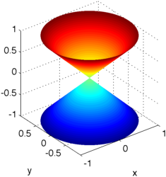
And here we graph a hyperboloid of one sheet.
x = sqrt(1/4+u.^2).*cos(v); y = sqrt(1/4+u.^2).*sin(v); z = u; surf(x,y,z), axis equal
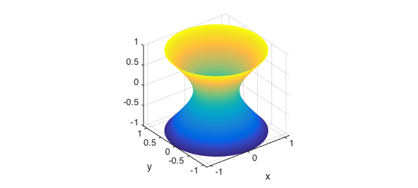
We can also define functions over such surfaces. Here is one example:
f = (1-u).*sin(10*v); surf(x,y,z,f), axis equal
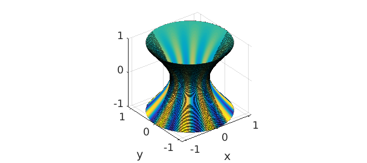
We now generate a bumpy sphere. We start with a parameterization based on standard spherical coordinates.
t = chebfun2(@(t,p) t,[0 2*pi -pi/2 pi/2]); p = chebfun2(@(t,p) p,[0 2*pi -pi/2 pi/2]); [x,y,z] = sph2cart(t,p,0*t+1); surf(x,y,z), axis equal

To make it bumpy, we perturb its radius with an oscillatory function.
delta = sin(20*x)+sin(20*y)+sin(20*z); [x,y,z] = sph2cart(t,p,1+0.05*delta); surf(x,y,z), axis equal tight
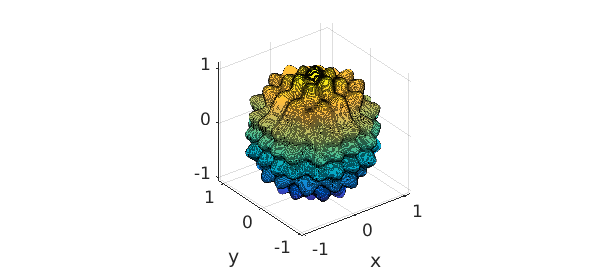
Finally we define a function on its surface.
f = (sin(10*t)).*cos(15*p); surf(x,y,z,f), axis equal tight
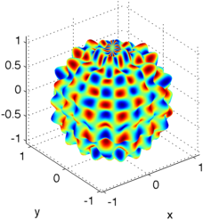
Here is the top view:
view(0,90)

There are many other interesting surfaces that can be represented by Chebfun2 objects. The parameterization of this seashell was taken from [1].
u = chebfun2(@(u,v) u, [0 6*pi 0 2*pi]); v = chebfun2(@(u,v) v, [0 6*pi 0 2*pi]); x = 2*(1-exp(u/(6*pi))).*cos(u).*cos(v/2).^2; y = 2*(-1+exp(u/(6*pi))).*sin(u).*cos(v/2).^2; z = 1-exp(u/(3*pi))-sin(v)+exp(u/(6*pi)).*sin(v); surf(x,y,z), camlight view(160,10), axis equal, box on
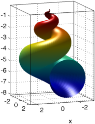
Here is the top view:
view(-180,90)
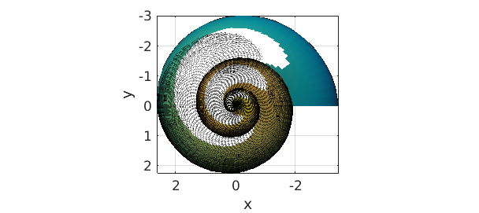
And here is the well known Moebius strip, see [2], often used as an example of a non-orientable surface.
u = chebfun2(@(u,v) u, [0 2*pi -1 1]); v = chebfun2(@(u,v) v, [0 2*pi -1 1]); x = (1+0.5*v.*cos(u/2)).*cos(u); y = (1+0.5*v.*cos(u/2)).*sin(u); z = 0.5*v.*sin(u/2); surf(x,y,z), camlight, axis equal, box on

What happens if we try to plot normal vectors to this surface? We can compute a normal vector field to this surface using the command NORMAL, which take a position vector as input.
r = [x;y;z]; n = normal(r); hold on, quiver3(x,y,z,n,2,'k','numpts',8) axis tight
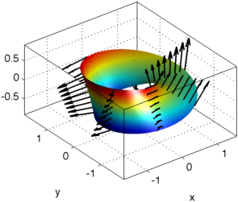
The normal, as computed, is clearly not continuous on this surface. The normal vector field computed above is $ru$ x $rv$. Both $ru$ and $rv$ are parallel to the surface. We illustrate this below
ru = diff(r,1,1); rv = diff(r,1,2); quiver3(x,y,z,ru,'r','numpts',8) quiver3(x,y,z,rv,'b','numpts',8) view(-80,65); hold off
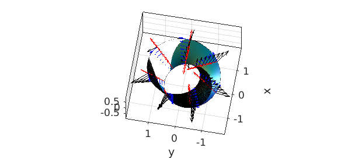
We can verify that $ru$ and $rv$ are orthogonal, in this case, by taking their inner product.
norm(ru'*rv,inf)
ans =
5.016985192747734e-14
Finally, we take advantage of this orthogonality and project an arbitrary vector field $V$ onto the Moebius surface. In the figure below, the field PV is tangent to the surface.
R1 = ru/sqrt(ru'*ru); R2 = rv/sqrt(rv'*rv); V = [sin(5*u);cos(5*v);0]; PV = (R1'*V)*R1 + (R2'*V)*R2; surf(x,y,z), axis tight, view(-80,65), camlight hold on quiver3(x,y,z,PV,2,'k','numpts',30) hold off

Our final example is the Klein Bottle, see [3], which is also non-orientable. A plot of the "figure 8" immersion (Klein bagel) of the Klein bottle is below.
u = chebfun2(@(u,v) u, [0 2*pi 0 2*pi]); v = chebfun2(@(u,v) v, [0 2*pi 0 2*pi]); r = 3; x=(r+cos(u/2).*sin(v)-sin(u/2).*sin(2*v)).*cos(u); y=(r+cos(u/2).*sin(v)-sin(u/2).*sin(2*v)).*sin(u); z=sin(u/2).*sin(v)+cos(u/2).*sin(2*v); surf(x,y,z,'FaceAlpha',.6), camlight left, colormap(hot), axis tight equal off
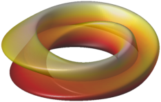
And here are the top and side views.
view(0,90)
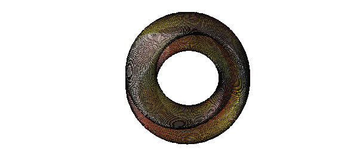
view(90,0)

Here is the more complicated version found by Robert Israel of the parameterization of the 3-dimensional immersion of the bottle itself.
u = chebfun2(@(u,v) u, [0 pi 0 2*pi]);
v = chebfun2(@(u,v) v, [0 pi 0 2*pi]);
x = -(2/15)*cos(u).*(3*cos(v)-30*sin(u)+90*cos(u).^4.*sin(u)- ...
60*cos(u).^6.*sin(u)+5*cos(u).*cos(v).*sin(u));
y = -(1/15)*sin(u).*(3*cos(v)-3*cos(u).^2.*cos(v)-48*cos(u).^4.*cos(v)+ ...
48*cos(u).^6.*cos(v)-60*sin(u)+5*cos(u).*cos(v).*sin(u) ...
-5*cos(u).^3.*cos(v).*sin(u) -80*cos(u).^5.*cos(v).*sin(u)+ ...
80*cos(u).^7.*cos(v).*sin(u));
z = (2/15)*(3+5*cos(u).*sin(u)).*sin(v);
surf(x,y,z,'FaceAlpha',.5), camlight left, axis tight equal off
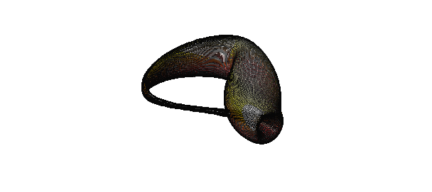
A normal vector field on this surface can now be obtained using Chebfun2 with a simple command.
hold on quiver3(x,y,z,-normal([x;y;z]),2,'k') hold off
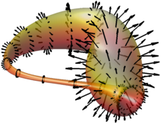